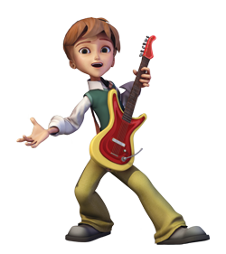
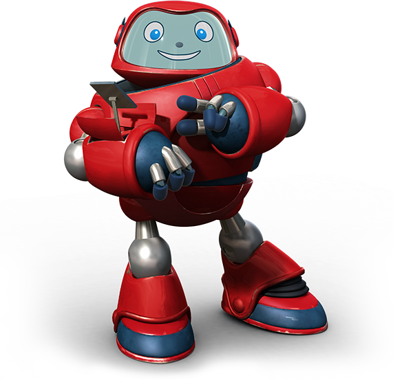

A boy and his toy robot travel back in time to the early events of the Old Testament and
New Testament with best friend Joy Pepper.
Meet Chris

Christopher "Chris" Quantum is the 12-year-old son of Professor Crispin Quantum and Phoebe Quantum. He first appears in the episode "In The Beginning".
Meet Joy
Joy Pepper is Chris's 12-year-old next door neighbor and best friend. She was voiced by Azusa Yamato in the original series, and by Shannon Chan-Kent in the new series.
Meet Gizmo

Gizmo is a robot who assists on Chris and Joys' adventures with Superbook. He gives them info about where they are and what time period they are in. He is a red robot with a light blue screen/ face. Shorter than Joy and Chris (which is also in CHRIS and the shorts of Rafael).